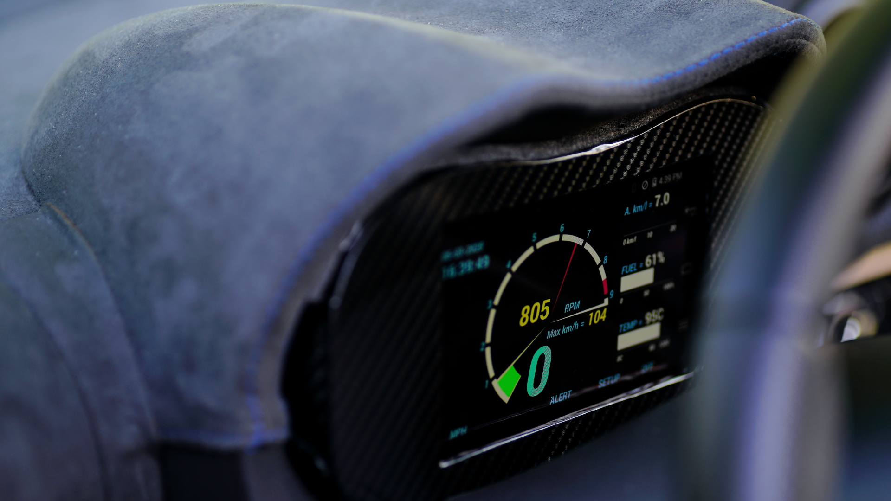
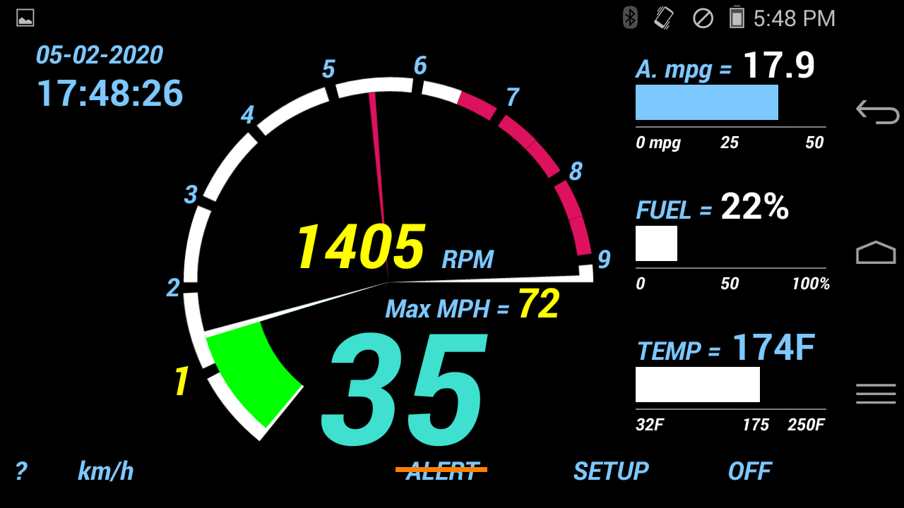
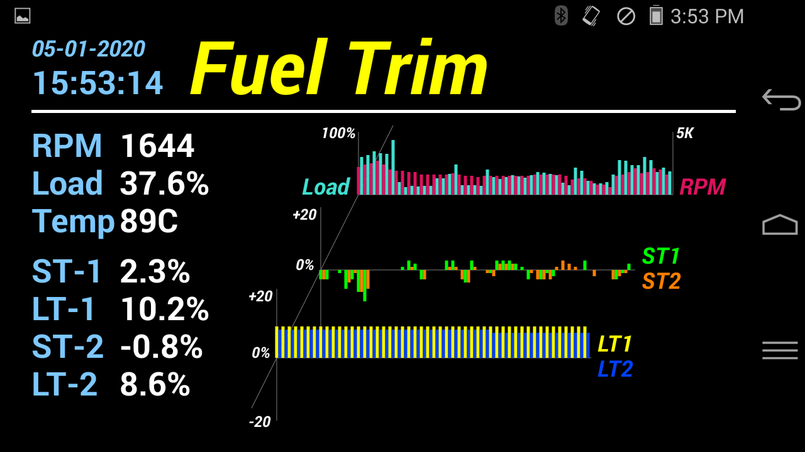
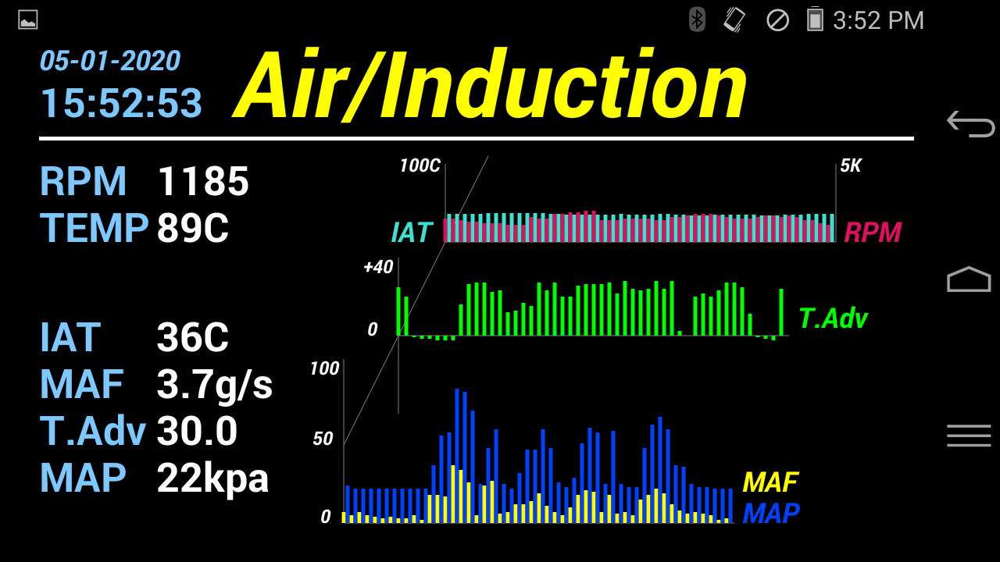
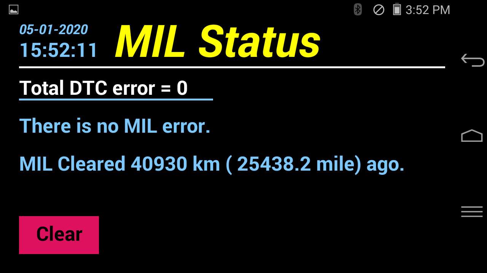
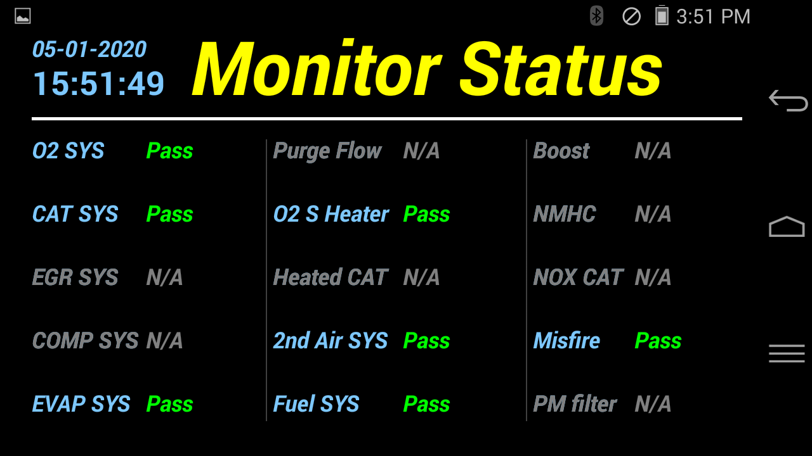

New
or old...She is always your
love. Fix and tune your ride
with patient and passion!
Download
(or Search Shihwei Yu
from the main Google Play Store
and select ADD-111R or ADD-PRO /
ADD-LITE then look for "more by
Shihwei Yu")
Timless
beauty (Click to see full size
picture)






×
ADD TPLUS on
the Lotus Elise
ADD TPLUS
on Mercedes C350
Intensive MIL/CEL status mode
Shows total
number of MIL/CEL errors Shows details
of the MIL/CEL code and brief error message (so you
don't need to write down and google it later!)
Clears the MIL/CEL code with one touch on a
button
Shows the distance you have been driving since last
MIL/CEL cleared
Monitor status mode
(Pre-check for SMOG)
Shows ECU monitors status (ready / pass or
incomplete)
Intensive
Fuel-trim information mode
Shows dynamic short term and
long term fuel trim information Shows
dynamic engine RPM, load, and coolant temperature
Records
and maps fuel trim data with related RPM / load in
a dynamic graph Intensive
Air / Induction
information mode Shows dynamic
IAT (intake air temperature), MAF
(mass air flow), Timing Advance, and
MAP (manifold absolute pressure)
Shows dynamic
engine RPM, and coolant temperature
Records and maps
MAF / Timing advance / MAP data with
related RPM and IAT in a dynamic
graph
Daily driving (digital instrument) mode Shows
dynamic RPM, Speed,
Coolant temperature,
Fuel level
Supports maximum RPM
indicator
Record of maximum
Speed
Shows instantaneous
fuel consumption and
estimated average fuel
consumption
Adjustable over-speed
alarm warning beep
(can be disabled /
enabled easily from
main screen)
Adjustable RPM
red-line indicator
Supports one-touch MPH
and KM/H switching
MIL/CEL checking and
indicator
Download
(or Search Shihwei Yu
from the main Google Play Store
and select ADD-111R or ADD-PRO /
ADD-LITE then look for "more by
Shihwei Yu")
Quick User
Guide
1. Plug the Bluetooth ELM327 based OBD2 dongle into
your car. (recommending the OBD2 dongle with power switch so
you can turn it full off when not using it)
2. In your android phone, go to Setting - Bluetooth:
turn on Bluetooth, finding the OBD2 dongle and pairing it
(entering 1234 or 0000 if you are asked for passcode)
3. Once the OBD2 is successfully paired, launch the
ADD-TPLUS and watch the cool opening welcome screen. Read and
commit to the safety warning message.
4. The ADD-TPLUS will start at the default "Drive"
mode. If you want to diagnose / tune your car, simply swipe to left of right and select the
mode your need.
5. In the Drive-mode, ADD-TPLUS shows your car's RPM,
Speed, coolant temp, fuel... Enjoy the ADD-TPLUS in your daily
drive!
Click the MPH to switch to imperial system (mph)
or km/h to metric system for your local system.
Touch the SETUP to configure the max speed alert
and red-line RPM to match your car. NOTE: for safety, the
Setup is disabled if car is moving.
Turn on (or turn off) the speed alert by simply
touch the ALERT button.
Touch the "?" for short help and email contact
for supports and comments.
Touch OFF to exit the ADD-PRO when you have done
using the ADD-PRO. (Turn off the OBD2 or unplug it to save
car's battery)
Your preference / setting used in last time will
be remembered and applied automatically when you launch the
ADD-TPLUS next time (set it once and use it as a real tool
everyday!)
6. Older model of cars or older model of OBD2 may
restrict and limit certain information NOT available for
displaying.